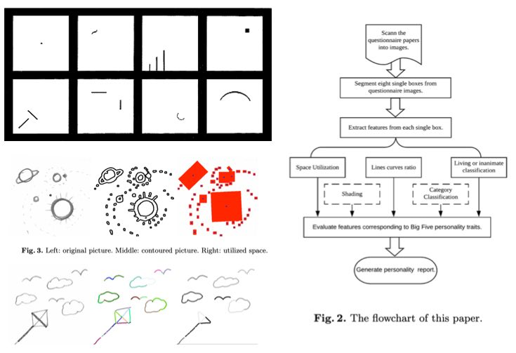
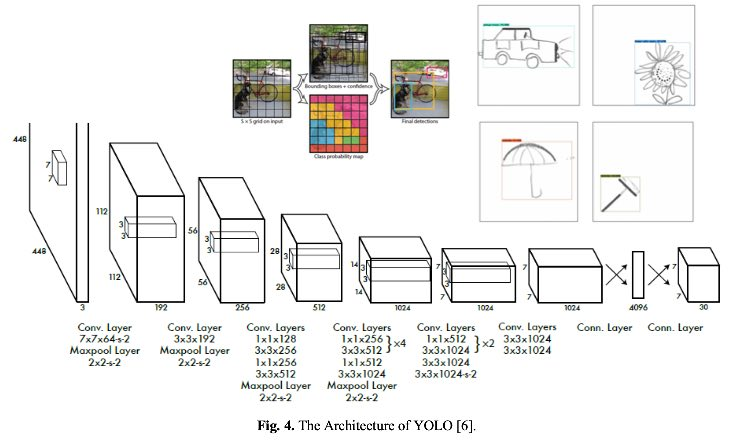
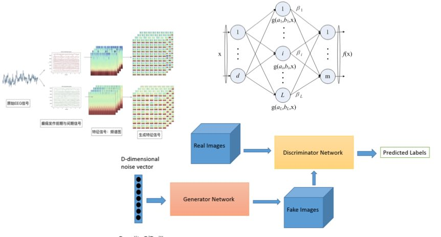
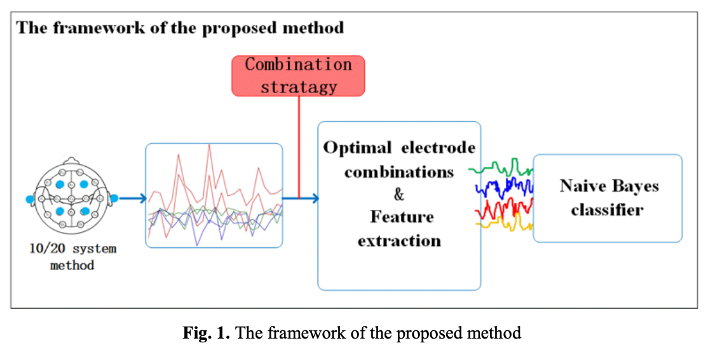
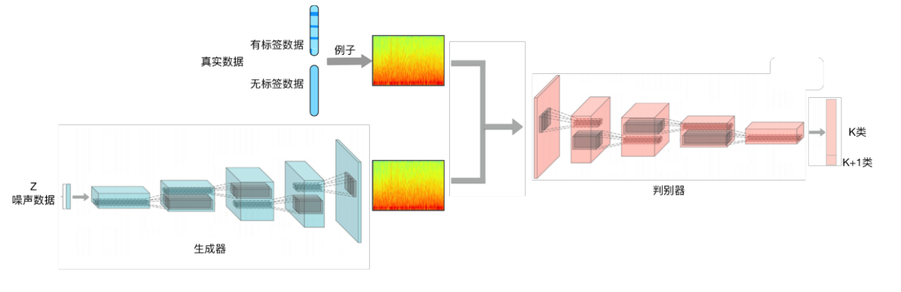

About me
I am a Thesis Master student of Computer Science & Engineering at Concordia University (Montreal, Canada). I received my M.Eng. Degree in Computer Science from the Beijing University of Technology. I spent a year and four months as an AI Research And Development Intern at Vimicro Company working in deep learning projects.
I work on image processing algorithms, machine learning and deep learning. My recent work focuses on how to make machine learning better aligned with human-drawn images, especially sketches classification and analysis. I study these questions using methods and models from machine learning, deep learning, Opencv and basic OCR or image processing technicals.
My research has been generously supported by the Natural Sciences and Engineering Research Council of Canada(NSERC) and Centre for Pattern Recognition and Machine Intelligence(CENPARMI).
Please see my CV and publications for more details.
Contact
li_lil@encs.concordia.ca or lili.jemma.liu@gmail.com
Publications
 |
Computer-aided Wartegg Drawing Completion Test
International Conference on Pattern Recognition and Artificial(ICPRAI), 2020
|
 |
Hand-drawn Object Detection for Assist Scoring Wartegg Zeichen Test
International Conference on Pattern Recognition and Artificial(ICPRAI), 2020
|
 |
A Novel Seizure Prediction method based on Generative features
International Conference on Intelligent Science and Big Data Engineering, 2018
|
 |
A Novel EEG Signal Recognition Method Using Modified Optimal Electrodes Recombination Strategy
International Conference on Intelligent Science and Big Data Engineering, 2018
|
 |
An Epilepsy Prediction Approach Based on Semi-supervised Deep Convolutional Generative Adversarial Nets
Draft , 2019
|